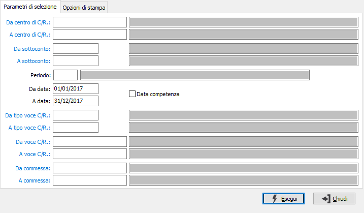
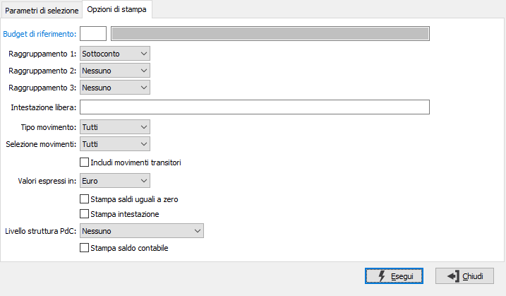

Stampa bilancio
La stampa del bilancio consente di produrre due diversi tipi di bilancio: un bilancio che riporta i valori suddivisi tra ripartiti e da ripartire con il relativo saldo ed un bilancio raffrontato con un budget specifico. Sono inoltre possibile tre livelli di raggruppamento variabili.
Il programma si articola su due finestre video. La prima, Parametri di selezione, consente la definizione dei criteri di selezione dei movimenti da portare in bilancio.

DA CENTRO C/R.: eventuale codice del centro di costo/ricavo, presente in anagrafica, da cui si vuole iniziare la selezione di analisi. Confermando a vuoto, la selezione inizia dal primo codice valido. Sul campo sono attive le funzioni di ricerca (F9) ed accesso interattivo alla tabella collegata (CTRL+W).
A CENTRO C/R.: eventuale codice del centro di costo/ricavo, presente in anagrafica, con cui si vuole terminare la selezione di analisi. Confermando a vuoto, la selezione termina con l’ultimo codice valido. Sul campo sono attive le funzioni di ricerca (F9) ed accesso interattivo alla tabella collegata (CTRL+W).
DA SOTTOCONTO: eventuale codice del sottoconto, presente in anagrafica, da cui si desidera iniziare la selezione di analisi. Confermando a vuoto, la selezione inizia con il primo codice valido. Sul campo sono attive le funzioni di ricerca (F9) ed accesso interattivo alla tabella collegata (CTRL+W).
A SOTTOCONTO: eventuale codice del sottoconto, presente in anagrafica, a cui si desidera terminare la selezione di analisi. Confermando a vuoto, la selezione termina con l’ultimo codice valido. Sul campo sono attive le funzioni di ricerca (F9) ed accesso interattivo alla tabella collegata (CTRL+W).
PERIODO: inserire il periodo per cui si desidera effettuare la stampa del bilancio. L'inserimento del periodo determina la valorizzazione delle successive date di elaborazione. Sul campo sono attive le funzioni di ricerca (F9) sulla tabella stessa.
DA DATA: eventuale data del movimento da cui deve iniziare l’analisi dei movimenti relativamente ai precedenti parametri di selezione. Confermando a vuoto, l’analisi inizia con il primo movimento valido.
A DATA: eventuale data del movimento con cui si desidera terminare l’analisi dei movimenti relativamente ai precedenti parametri di selezione. Confermando a vuoto, l’analisi si conclude con l'ultimo movimento valido.
DATA COMPETENZA: definisce se il bilancio deve riferirsi alle date dei movimenti oppure alle eventuali date di competenza inserite sulle singole righe dei movimenti. La spunta determina la selezione per competenza. Questa opzione è disponibile solo per gli utenti della versione Enterprise.
DA TIPO VOCE C/R.: eventuale codice del tipo voce di costo/ricavo, presente in anagrafica, da cui si vuole iniziare la selezione di analisi. Confermando a vuoto, la selezione inizia dal primo codice valido. Sul campo sono attive le funzioni di ricerca (F9) ed accesso interattivo alla tabella collegata (CTRL+W).
A TIPO VOCE C/R.: eventuale codice del tipo voce di costo/ricavo, presente in anagrafica, con cui si vuole terminare la selezione di analisi. Confermando a vuoto, la selezione termina con l’ultimo codice valido. Sul campo sono attive le funzioni di ricerca (F9) ed accesso interattivo alla tabella collegata (CTRL+W).
DA VOCE C/R.: eventuale codice della voce di costo/ricavo, presente in anagrafica, da cui si vuole iniziare la selezione di analisi. Confermando a vuoto, la selezione inizia dal primo codice valido. Sul campo sono attive le funzioni di ricerca (F9) ed accesso interattivo alla tabella collegata (CTRL+W).
A VOCE C/R.: eventuale codice della voce di costo/ricavo, presente in anagrafica, con cui si vuole terminare la selezione di analisi. Confermando a vuoto, la selezione termina con l’ultimo codice valido. Sul campo sono attive le funzioni di ricerca (F9) ed accesso interattivo alla tabella collegata (CTRL+W).
DA COMMESSA: eventuale codice della commessa, presente in anagrafica, da cui si vuole iniziare la selezione di analisi. Confermando a vuoto, la selezione inizia dal primo codice valido. Sul campo sono attive le funzioni di ricerca (F9) ed accesso interattivo alla tabella collegata (CTRL+W).
A COMMESSA: eventuale codice della commessa, presente in anagrafica, con cui si vuole terminare la selezione di analisi. Confermando a vuoto, la selezione termina con l’ultimo codice valido. Sul campo sono attive le funzioni di ricerca (F9) ed accesso interattivo alla tabella collegata (CTRL+W).
La seconda, Opzioni di stampa, consente la definizione dei metodi di selezione e stampa, nonché la scelta del tipo e dei campi di raggruppamento e dell'eventuale budget di confronto.

BUDGET DI RIFERIMENTO: indica il codice del Budget da utilizzare per determinare i valori di confronto ed effettuare la stampa del bilancio con raffronto budget. Sul campo sono attive le funzioni di ricerca (F9) ed accesso interattivo alla tabella collegata (CTRL+W).
RAGGRUPPAMENTO 1: definisce il primo campo di raggruppamento. Valori possibili:
Sottoconto
Mastro C/R.
Centro C/R.
Tipo Voce C/R.
Voce C/R.
Commessa
Nel caso sia utilizzato il budget di raffronto il campo può assumere solo i valori di Sottoconto o Centro C/R..
RAGGRUPPAMENTO 2: definisce il secondo campo di raggruppamento. Valori possibili:
Nessuno
Sottoconto
Mastro C/R.
Centro C/R.
Tipo Voce C/R.
Voce C/R.
Commessa
Nel caso sia utilizzato il budget di raffronto il campo può assumere solo i valori di Sottoconto, Centro C/R. o Nessuno.
RAGGRUPPAMENTO 3: definisce il terzo campo di raggruppamento. Valori possibili:
Nessuno
Sottoconto
Mastro C/R.
Centro C/R.
Tipo Voce C/R.
Voce C/R.
Commessa
Il campo non è attivo in caso di utilizzo del budget di raffronto.
INTESTAZIONE LIBERA: intestazione alternativa da utilizzare in stampa al posto di quella predefinita.
TIPO MOVIMENTO: definisce il tipo di movimenti da elaborare. Valori ammessi: Effettivi; Previsionali.
SELEZIONE MOVIMENTI: definisce quali movimenti devono essere elaborati. Valori ammessi: Originari; Derivati; Tutti.
INCLUDI MOVIMENTI TRANSITORI: definisce se includere nell'elaborazione i movimenti relativi a centri C/R. transitori; spuntare la casella per includere i movimenti transitori.
VALORI ESPRESSI IN: indica la divisa con cui effettuare la stampa. Valori possibili: Euro; Lire.
STAMPA SALDI UGUALI A ZERO: definisce se effettuare la stampa anche se il saldo dell'elemento in stampa è uguale a zero; spuntare la casella per stampare i saldi a zero.
STAMPA INTESTAZIONE: indica se deve essere stampata come prima pagina del report una pagina contenente tutte le informazioni inerenti i criteri di selezione specificati per il report stesso (casella con segno di spunta).
LIVELLO STRUTTURA PDC: consente di stampare, se impostato diverso da nessuno, i livelli superiori rispetto al primo livello di raggruppamento; nella casella compariranno le diciture inserite nella configurazione.
STAMPA SALDO CONTABILE: riporta in stampa il saldo contabile (casella con segno di spunta).